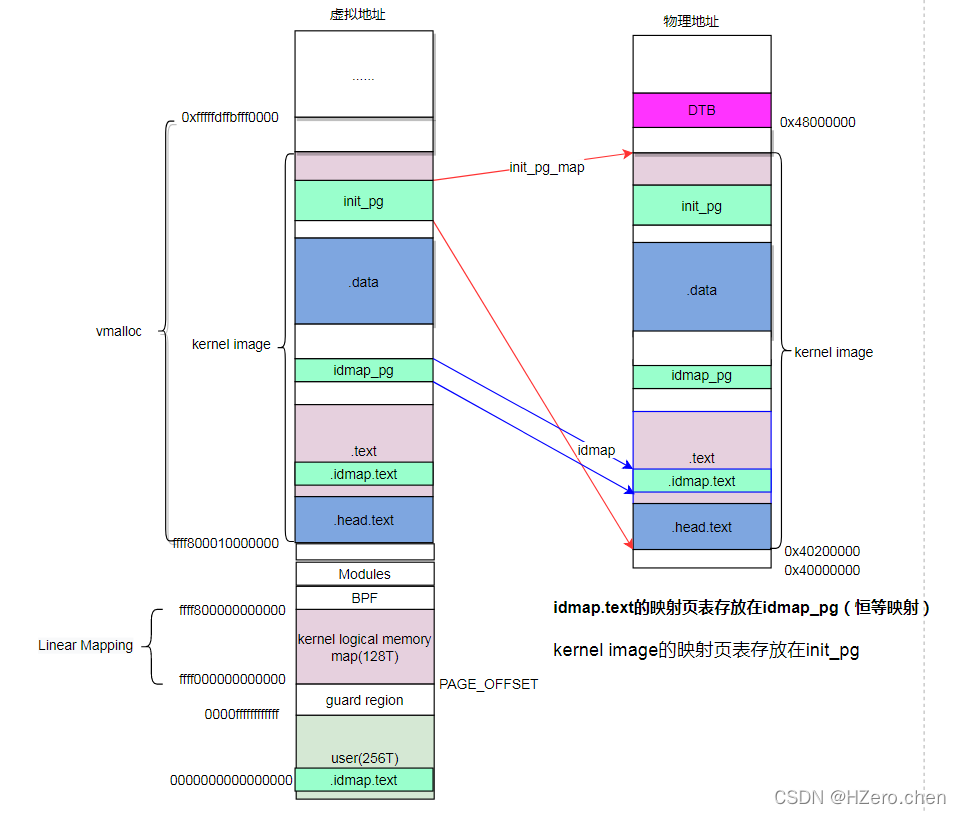
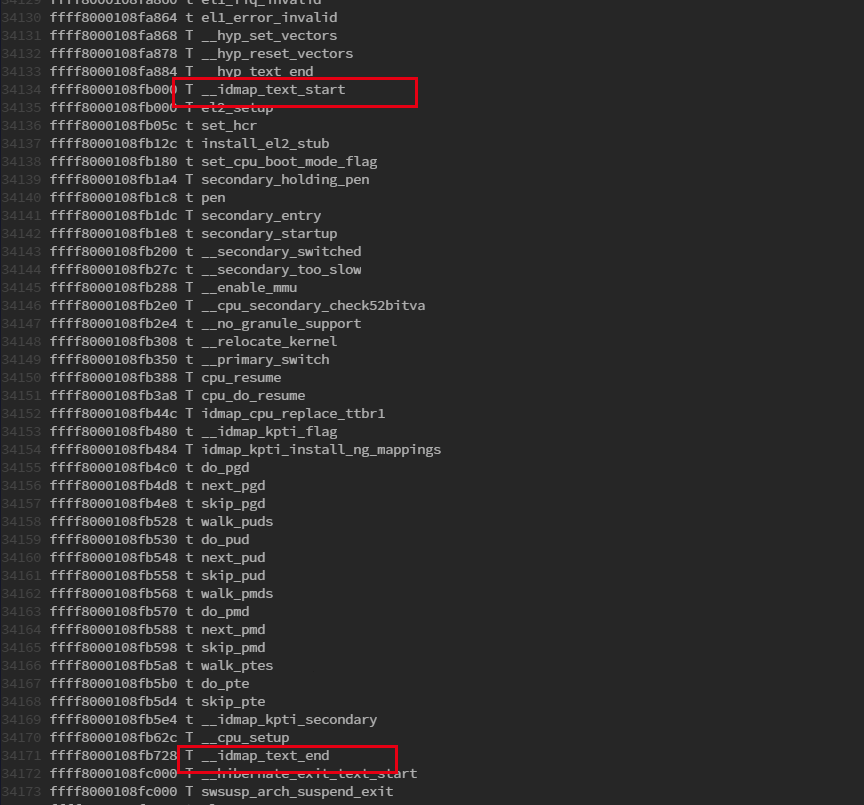

3.8.2. __create_page_tables
create_pag_tables主要完成以下工作
无效init_pg区域的cacheline
清零init_pg内存区域
在idmap_pg区域为kernel创建恒等映射(物理地址与虚拟地址一致)，由于只在开始MMU时使用，因此只会为部分代码创建映射
在init_pg区域为kernel创建映射
再次无效init_pg和idmap_pg区域对应的cacheline
备注
在ARM64架构中，汇编代码初始化阶段会创建两次地址映射。第一次是为了打开MMU操作的准备，因为在打开MMU之前当前代码运行在物理地址之上，而打开 MMU之后代码与逆行在虚拟地址之上。为了从物理地址转换到虚拟地址的平滑过渡，ARM推荐VA和PA相等的一段映射(例如虚拟地址0xffff8000通过页表查询映射的物理地址也是0xffff8000) 这段映射在Linux中称为identity mapping, 第二次是kernel Image映射
执行完create_page_tables，将得到如下的地址空间布局

当kernel image加载到物理内存后，为.idmap.text段创建了idmap映射，其中.idmap.text属于.text段的一部分。idmap_pg页表空间位于.data段和.text段之间.为整个kernel iamge创建了Init映射， 其中init_pg页表位于.data段
备注
为idmap.text创建恒等映射，实际就是创建idmap页表，通过填充pgd, pud, pmd页表项完成。其中pgd, pud为页表描述符，指向下级页表，pmd为块描述符，pmd指向idmap_text区域
主要宏 |
说明 |
KIMAGE_VADDR |
kernel起始虚拟地址，_text地址 |
PAGE_OFFSET |
Linear Mapping起始虚拟地址 |
PAGE_END |
Linear Mapping结束虚拟地址 |
__PHYS_OFFSET |
kernel起始虚拟地址，_text地址 |
KERNEL_START |
kernel起始虚拟地址，_text地址 |
建立页初始化的过程
__create_page_tables:
mov x28, lr //保存LR,通过ret返回
/*
* Invalidate the init page tables to avoid potential dirty cache lines
* being evicted. Other page tables are allocated in rodata as part of
* the kernel image, and thus are clean to the PoC per the boot
* protocol.
*/
adrp x0, init_pg_dir //
adrp x1, init_pg_end //
sub x1, x1, x0 //
bl __inval_dcache_area //将init_pg_end和init_pg_dir之间的区域对应的cacheline设定为无效
关于 init_pg_dir 和 init_pg_end 相关定义如下, 计算出kernel映射需要多少个page
//arch/arm64/kernel/vmlinnux.lds.S
. = ALIGN(PAGE_SIZE);
init_pg_dir = .;
. += INIT_DIR_SIZE;
init_pg_end = .;
#define INIT_DIR_SIZE (PAGE_SIZE * EARLY_PAGES(KIMAGE_VADDR, _end))
#define EARLY_PAGES(vstart, vend) ( 1 /* PGDIR page */ \
+ EARLY_PGDS((vstart), (vend)) /* each PGDIR needs a next level page table */ \
+ EARLY_PUDS((vstart), (vend)) /* each PUD needs a next level page table */ \
+ EARLY_PMDS((vstart), (vend))) /* each PMD needs a next level page table */
#define EARLY_PGDS(vstart, vend) (EARLY_ENTRIES(vstart, vend, PGDIR_SHIFT))
#define EARLY_PUDS(vstart, vend) (0)
#define EARLY_PMDS(vstart, vend) (EARLY_ENTRIES(vstart, vend, SWAPPER_TABLE_SHIFT))
#define EARLY_ENTRIES(vstart, vend, shift) (((vend) >> (shift)) \
- ((vstart) >> (shift)) + 1 + EARLY_KASLR)
-
#define PAGE_SIZE (_AC(1, UL) << PAGE_SHIFT)
#define PGDIR_SHIFT ARM64_HW_PGTABLE_LEVEL_SHIFT(4 - CONFIG_PGTABLE_LEVELS)
#define ARM64_HW_PGTABLE_LEVEL_SHIFT(n) ((PAGE_SHIFT - 3) * (4 - (n)) + 3)
#define SWAPPER_PGTABLE_LEVELS (CONFIG_PGTABLE_LEVELS - 1)
#define IDMAP_PGTABLE_LEVELS (ARM64_HW_PGTABLE_LEVELS(PHYS_MASK_SHIFT) - 1)
#define PAGE_SHIFT CONFIG_ARM64_PAGE_SHIFT
#define CONFIG_ARM64_PAGE_SHIFT 12
清除init page table
/*
* Clear the init page tables.
*/
adrp x0, init_pg_dir
adrp x1, init_pg_end
sub x1, x1, x0
1: stp xzr, xzr, [x0], #16 //将初始化页表地址清零
stp xzr, xzr, [x0], #16
stp xzr, xzr, [x0], #16
stp xzr, xzr, [x0], #16
subs x1, x1, #64
b.ne 1b
mov x7, SWAPPER_MM_MMUFLAGS
x7中保存了SWAPPER_MM_MMUFLAGS，相关定义如下
#define SWAPPER_MM_MMUFLAGS (PMD_ATTRINDX(MT_NORMAL) | SWAPPER_PMD_FLAGS)
/*
* AttrIndx[2:0] encoding (mapping attributes defined in the MAIR* registers).
*/
#define PMD_ATTRINDX(t) (_AT(pmdval_t, (t)) << 2)
/*
* Initial memory map attributes.
*/
#define SWAPPER_PMD_FLAGS (PMD_TYPE_SECT | PMD_SECT_AF | PMD_SECT_S)
/*最低位为01，根据页表描述符为块描述符*/
#define PMD_TYPE_SECT (_AT(pmdval_t, 1) << 0)
创建identity映射
/*
* Create the identity mapping.
*/
adrp x0, idmap_pg_dir //x0保存了id_map区域页表存放的起始地址idmap_pg_dir
adrp x3, __idmap_text_start //x3保存了idmap_test_start的物理地址，它就是需要创建恒等映射的起始地
idmap_pg_dir 定义如下
#arch/arm64/kernel/vmlinux.lds.S
idmap_pg_dir = .;
. += IDMAP_DIR_SIZE;
idmap_pg_end = .;
#define IDMAP_DIR_SIZE (IDMAP_PGTABLE_LEVELS * PAGE_SIZE)
#define IDMAP_PGTABLE_LEVELS (ARM64_HW_PGTABLE_LEVELS(PHYS_MASK_SHIFT) - 1)
mov x5, #VA_BITS_MIN //获取总线位宽
adr_l x6, vabits_actual //获取vabit_actual变量地址
str x5, [x6] //将总线位宽写入到vabits_actual中
dmb sy // 内存屏障指令，等待上述指令完成
dc ivac, x6 //将x6指定的虚拟地址的数据缓存清除
/*
* VA_BITS may be too small to allow for an ID mapping to be created
* that covers system RAM if that is located sufficiently high in the
* physical address space. So for the ID map, use an extended virtual
* range in that case, and configure an additional translation level
* if needed.
*
* Calculate the maximum allowed value for TCR_EL1.T0SZ so that the
* entire ID map region can be mapped. As T0SZ == (64 - #bits used),
* this number conveniently equals the number of leading zeroes in
* the physical address of __idmap_text_end.
*/
adrp x5, __idmap_text_end //获取内核代码终止地址
clz x5, x5 //地址前导0个数，并赋值给x5
cmp x5, TCR_T0SZ(VA_BITS) //虚拟地址的最大值前导0个数和最高物理地址比较
//如果物理地址的前导0多，说明地址够用，不用扩展
b.ge 1f // .. then skip VA range extension
adr_l x6, idmap_t0sz //获取idmap_t0sz变量地址
str x5, [x6] //
dmb sy
dc ivac, x6 // Invalidate potentially stale cache line
/*
* If VA_BITS == 48, we don't have to configure an additional
* translation level, but the top-level table has more entries.
*/
mov x4, #1 << (PHYS_MASK_SHIFT - PGDIR_SHIFT)
str_l x4, idmap_ptrs_per_pgd, x5
1:
ldr_l x4, idmap_ptrs_per_pgd //获取idmap_ptrs_per_pgd地址
mov x5, x3 //x3中保存着内核代码起始地址，赋值为x5
adr_l x6, __idmap_text_end //获取内核代码终止地址
//map_memory是一个宏, x0页表位置，x1下一级页表项位置, x3需要映射的开始地址，x6需要映射的结束地址
//x7 映射最后一级页表项的flag, x3映射的物理地址 x4: pgd项个数
//此处为idmap test创建恒等映射, idmap.text段在head.S中申明
map_memory x0, x1, x3, x6, x7, x3, x4, x10, x11, x12, x13, x14
备注
通过查看System.map可以知道idmap_text段包含以下内容

/*
* Map the kernel image (starting with PHYS_OFFSET).
*/
adrp x0, init_pg_dir //x0存放页表的起始地址
mov_q x5, KIMAGE_VADDR + TEXT_OFFSET //x5存放kernel开始映射的虚拟地址
add x5, x5, x23 // add KASLR displacement
mov x4, PTRS_PER_PGD //pgd页表项个数
adrp x6, _end //x6保存kernel结束映射的物理地址
adrp x3, _text //x3保存kernel的物理地址
sub x6, x6, x3 // _end - _text
add x6, x6, x5 //计算得到kernel结束映射的虚拟地址并保存在x6中
//为kernel image创建页表
map_memory x0, x1, x5, x6, x7, x3, x4, x10, x11, x12, x13, x14
/*
* Since the page tables have been populated with non-cacheable
* accesses (MMU disabled), invalidate the idmap and swapper page
* tables again to remove any speculatively loaded cache lines.
*/
adrp x0, idmap_pg_dir
adrp x1, init_pg_end
sub x1, x1, x0
dmb sy
bl __inval_dcache_area //将init_pg和idmap_pg区域对应的cacheline
ret x28
ENDPROC(__create_page_tables)